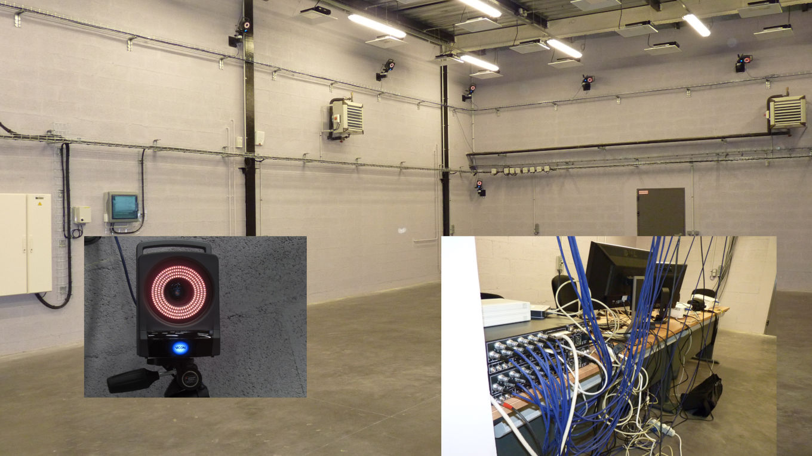
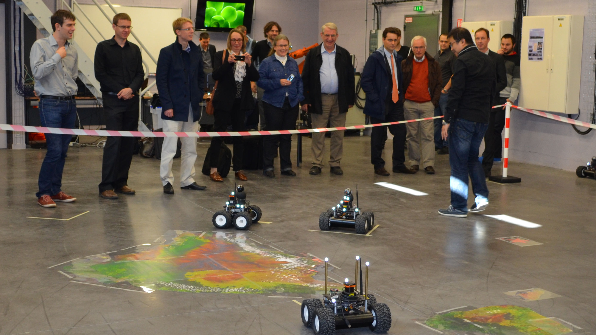

Research
Research Projects
CERBERE : Event-based camera for fast object detection around autonomous vehicles.
Funding: French National Research Agency (ANR AAP Générique PRCE 2021).
Role: Project coordinator.
Project duration: 48 months (2022-2025).
Project Leader: LITIS.
Academic partners: MIS, ImViA.
Industrial partners: YUMAIN.
Role: Project coordinator.
Project duration: 48 months (2022-2025).
Project Leader: LITIS.
Academic partners: MIS, ImViA.
Industrial partners: YUMAIN.

Description: One of the main technological challenges for autonomous vehicles is understanding their environment, which is typically perceived through sensors such as lidars, radars, and cameras. The primary objective of this project is to leverage a sensor that breaks away from existing perception solutions for autonomous vehicles: the event-based camera.
The event-based camera is a bio-inspired sensor that measures changes in illumination at the pixel level in an asynchronous manner. This property makes it particularly interesting for autonomous vehicles, as it addresses the remaining challenges in autonomous driving scenarios: high dynamic scenes (e.g., exiting a tunnel), latency and speed of obstacle detection (other vehicles, pedestrians), while also considering the computational power and limited data flow constraints imposed by autonomous vehicles
ADAV: Adaptive multimodal data fusion for object detection in adverse weather conditions for autonomous Vehicles.
Funding: French National Research Agency (ANR AAP JCJC 2024).
Role: Scientific participation, Workpackage manager.
Project duration: 48 months (2025-2028).
Project Leader: LITIS.
Role: Scientific participation, Workpackage manager.
Project duration: 48 months (2025-2028).
Project Leader: LITIS.
Description: Multimodal perception systems (cameras, radars, lidars, infrared sensors) are increasingly used in autonomous mobility applications (vehicles, drones) and surveillance, particularly to overcome degraded visibility conditions (fog, rain, low light). In such conditions, data from different sensors may be subject to significant uncertainties, impacting the reliability of decisions made by automated systems. The ANR AdaV project aims to explore the possibilities of extracting environmental features to improve adaptive modality fusion for multiple object detection.
INARI : Multimodal vision for robust NAvigation and control of autonomous vehicles.
Description: The INARI project first aims to explore the effectiveness of the different modalities commonly used for multi-sensor data fusion and to leverage the physical information provided by unconventional polarization imaging for road surface condition detection. Modality fusion based on weather conditions will streamline the fusion process by considering only the high-response modalities. This is made possible by estimating sensor uncertainty and reliability in degraded weather conditions, allowing the selection of fusion modalities to be automatically adjusted according to external data acquisition conditions.
The second part of the INARI project focuses on determining vehicle grip based on road surface conditions. It has been demonstrated that polarimetric imaging, through its physical parameters (degree and angle of polarization), can classify the road surface according to its state (presence of ice, wet surface, dry surface). Once the surface condition is determined, the vehicle's adhesion coefficient can be estimated, enabling the implementation of an appropriate control strategy for more robust and safer navigation.
SCOPES: COllaborative Semantics for Evidential Situation Perception.
Funding: French National Research Agency / French Defense Innovation Agency (ANR ASTRID Robotique).
Role: Scientific Manager LITIS.
Project duration: 30 months (2022-2024).
Project Leader: LINEACT CESI.
Academic partners: LITIS, IRSEEM.
Industrial partners: none.
Role: Scientific Manager LITIS.
Project duration: 30 months (2022-2024).
Project Leader: LINEACT CESI.
Academic partners: LITIS, IRSEEM.
Industrial partners: none.
Description: SCOPES addresses the challenge of integrating visual information collected from a fleet of Unmanned Autonomous Vehicles (UAVs). This integration and sharing of data enable the generation of new information to be incorporated into the digital twin of the explored environment. SCOPES introduces two key contributions to building a trustworthy digital twin: the integration of uncertainty into the reconstructed digital twin through information obtained from the aggregation of multiple viewpoints and a robust, shared estimation of the positions of the data collected by different AIVs. These insights are intended to enhance human decision-making by providing new information, thereby increasing the decision-maker’s confidence in the data generated by the various Artificial Intelligence (AI) systems used within the digital twin and its subsystems.
COLIBRY: COLlaborative semantIc roBotics for industRY 5.0.
Funding: Rouen Normandie Metropole research facility.
Role: Scientific Manager LITIS.
Project duration: 24 months (2022-2024).
Project Leader: IRSEEM.
Academic partners: LITIS, LINEACT CESI.
Industrial partners: none.
Role: Scientific Manager LITIS.
Project duration: 24 months (2022-2024).
Project Leader: IRSEEM.
Academic partners: LITIS, LINEACT CESI.
Industrial partners: none.

Description : The COLIBRY project, spanning 24 months, aligns with metropolitan expertise related to the "Industry of the Future" and "Industrial Innovation," as it places collaborative robotics and digital twins at the core of its work plan. It focuses on the application context of flexible and reconfigurable production workshops. A particular emphasis will be placed on constrained industrial environments, such as those in the pharmaceutical industry and additive manufacturing (both metal and polymer-based), where robotics, in conjunction with digital twins, holds significant potential. Our contributions will rely on the use of multiple robots (of different types, including articulated arms and mobile robots), their perception capabilities, and the semantics of objects within the industrial environment to update the digital twin in real-time.
ROSEAU: RObotics SEnsorimotor loops to weed AUtonomously.
Funding: French National Research Agency (Challenge ANR ROSE - Robotique et capteurs au Service d'Ecophyto).
Role: Supervision of Hassan Nehme's thesis.
Project duration: 48 months (2018-2021).
Project Leader: SITIA.
Academic partners: IRSEEM, UMR AgroEcologie.
Industrial partners: SITIA, Chambre régionale d'agriculture de Bretagne, Chambre d'agriculture de Pays de Loire.
Role: Supervision of Hassan Nehme's thesis.
Project duration: 48 months (2018-2021).
Project Leader: SITIA.
Academic partners: IRSEEM, UMR AgroEcologie.
Industrial partners: SITIA, Chambre régionale d'agriculture de Bretagne, Chambre d'agriculture de Pays de Loire.
Description: The ROSEAU project aims to develop tools for performing in-row weeding operations.
These tools operate on three components—perception, decision, and action—which are the fundamental concepts of sensorimotor loops. Sensorimotor loops are control loops that connect sensors ("sensory...") to actuators ("...motor") through multi-level decision layers, ranging from reflex actions (very fast loops, on the order of hundredths of a second) to more complex reasoning (which can take several hours).
The goal of ROSEAU is to apply this framework to in-row weeding operations, with tools ranging from real-time detection and eradication of weeds to the optimization of farming strategies by correlating weed proliferation patterns with optimal intervention windows.
LOCADYN: Dynamic localization and security of people, objects and information flows on industrial sites.
Funding: Normandy Region and FEDERRole: Scientific Manager IRSEEM, Supervision of a post-doctoral student, Supervision of a final year project.
Project duration: 24 months (2017-2019).
Project Leader: IRSEEM.
Academic partners: IRSEEM, LINEACT.
Industrial partners: none.
Description: Improving performance and enhancing safety conditions on industrial sites are major challenges, requiring, among other things, the ability to dynamically locate people and assets within the site. Currently, securing and regulating access to areas with different characteristics (types of tasks, risk levels, or confidentiality requirements) are often managed through badge-controlled doors or barrier systems. However, these methods have several weaknesses, particularly in preventing unauthorized movements of people, objects, or tools.
Moreover, there is a growing use of technological devices that require precise localization within industrial environments, such as AGVs (mobile robots or drones) and augmented reality systems. It has therefore become essential to develop tools that dynamically manage the movement of people and assets using precise localization technologies.
New information and communication technologies enable real-time tracking of individuals' movements and verification of their authorizations and certifications. Given the scale of industrial sites, deploying a full-site localization infrastructure is often impractical. However, advancements in embedded technologies now make autonomous localization systems a viable option in the medium term.
This project will explore various technological solutions to quickly and efficiently identify individuals who may find themselves in unauthorized areas or performing tasks for which they are not qualified. In addition to dynamic tracking of people, these solutions can help address issues related to the movement of objects and tools within production workshops.
Furthermore, the implementation of a planning and scheduling tool for production and maintenance tasks will help prevent informal information transfers and unauthorized personnel movements.


COPTER : COoPération drone véhicule TERrestre.
Funding: Normandy Region and FEDERR.Role: Direction de la thèse de Louis Lecrosnier.
Project duration: 48 months (2016-2020).
Project Leader: IRSEEM.
Academic partners: IRSEEM, LITIS.
Industrial partners: CEREMA
Description: For several years, there has been a growing deployment of mobile robotics across various industrial and service sectors, including automotive, aerospace, energy, logistics, security, and healthcare. Today, the embedded electronic systems in robotic platforms have processing capabilities equivalent to the power of a computer from a few years ago. These continuously increasing capabilities make the system more intelligent—autonomous in its actions and cooperative with other machines—by equipping it with perception, communication, and decision-making abilities through sensors and software.
In this context, the COPTER project focuses on the cooperation between a drone (UAV) and a ground vehicle (car or mobile robot such as an AGV) for dense environmental perception. The use of drones has significantly expanded, and the concept of drone-vehicle cooperation is particularly viable from a regulatory perspective when using a tethered drone—one connected to the vehicle by a cable. This setup offers advantages such as a higher payload capacity and exemption from the DGAC airworthiness document required for civilian drones.
The idea is to explore the possibilities offered by the drone-vehicle coupling for scene perception from the ground vehicle’s perspective, using a drone maneuvering around the vehicle. The objective is to provide a 3D reconstruction that distinguishes between the static elements (infrastructure, buildings) and dynamic elements (vehicles, pedestrians, etc.). The project will explore two main applications:
- Assisting the navigation of an autonomous vehicle: dense perception can help the vehicle define its free space and plan its trajectory. Additionally, if the vehicle has prior knowledge of the scene in which it operates, it can use this information for precise localization.
- Using data on dynamic objects to gather information for traffic analysis, with a particular focus on mobile elements that are difficult to detect and track from the ground vehicle alone (e.g., two-wheelers and pedestrians).


VIATIC²: VIability and AuTonomy of Systems in Uncertain and Constrained Environments 2.
Funding: French National Research Agency / French Defense Innovation Agency (ANR ASTRID MATURATION - Accompagnement Spécifique des Travaux de Recherches et d’Innovation Défense : Maturation et valorisation).
Role: Project coordinator, Scientific Manager IRSEEM, Supervision of two research engineers.
Project duration: 36 months (2014-2018).
Project Leader: IRSEEM.
Academic partners: IRSEEM.
Industrial partners: MBDA, VIMADES.
Role: Project coordinator, Scientific Manager IRSEEM, Supervision of two research engineers.
Project duration: 36 months (2014-2018).
Project Leader: IRSEEM.
Academic partners: IRSEEM.
Industrial partners: MBDA, VIMADES.
Description: The VIATIC 2 project aimed to further develop and strengthen the promising results obtained in the initial VIATIC project. The work focused on designing a coordination system for a group of vehicles (land, maritime, or aerial) tasked with reaching a set of targets (fixed or mobile). The proposed coordination system consisted of two main subsystems: a trajectory planning module and an allocation and reallocation module. One of the key strengths of the proposed solution was the integration of planning and allocation tasks, enabling both subsystems—usually studied and designed separately—to communicate and work together.



ARGOS : Autonomous Robot for Gas and Oil Sites.
Funding: French National Research Agency and Total (ARGOS Challenge).
Role: Responsible for the vision part (detection and reading of gauges, valves, etc.), Supervision of Pierre Merriaux's PhD thesis, Supervision of a post-doctoral student.
Project duration: 36 months (2014-2017).
Project Leader: IRSEEM.
Academic partners: IRSEEM.
Industrial partners: Sominex.
Role: Responsible for the vision part (detection and reading of gauges, valves, etc.), Supervision of Pierre Merriaux's PhD thesis, Supervision of a post-doctoral student.
Project duration: 36 months (2014-2017).
Project Leader: IRSEEM.
Academic partners: IRSEEM.
Industrial partners: Sominex.
Description : The objective of the ARGOS Challenge is to promote the development of advanced robotic systems capable of operating in oil and gas production environments. The program focuses on robotic systems that can function safely and either fully autonomously or under supervision, both on land and offshore production sites (potentially in hazardous explosive atmospheres). The overall goal is to enhance the safety of operators on remote production sites.
Five teams from Austria and Germany (ARGONAUTS), Spain and Portugal (FOXIRIS), France (VIKINGS), Japan (AIR-K), and Switzerland (LIO) competed to develop robots capable of performing inspection tasks, detecting anomalies, and intervening in emergency situations.
IRSEEM partnered with the SME Sominex to take on this challenge by forming the VIKINGS consortium. Our consortium won the first two rounds of the three-round competition, which took place from September 2014 to March 2017.
VIATIC : VIability and AuTonomy of Systems in Uncertain and Constrained Environments.
Funding: French National Research Agency / French Defense Innovation Agency (ANR ASTRID - Accompagnement Spécifique des Travaux de Recherches et d’Innovation Défense).
Role: Scientific Manager IRSEEM, supervision of a post-doctoral student.
Project duration: 36 months (2011-2014).
Project Leader: IRSEEM.
Academic partners: IRSEEM, IMM Institut Marcel Mauss, LASTRE.
Industrial partners: MBDA.
Role: Scientific Manager IRSEEM, supervision of a post-doctoral student.
Project duration: 36 months (2011-2014).
Project Leader: IRSEEM.
Academic partners: IRSEEM, IMM Institut Marcel Mauss, LASTRE.
Industrial partners: MBDA.

Description:The VIATIC project aims to develop a prototype system for coordinating a group of autonomous robots tasked with reaching a set of low-mobility targets whose positions are not precisely known. This is a re-allocatable multi-robot, multi-target problem with a strongly dual nature. The challenge is both to relocate previously identified targets and to assign the most suitable robot for an interception, rescue, or other mission, depending on the scenario. The aspect of imperfect knowledge (incomplete environmental mapping) and imprecise data (localization errors) is a key element of these scenarios.
In the military domain, the developed algorithms can be applied to the interception of low-mobility, re-allocatable targets. These are multi-missile, multi-target scenarios that require the development of new guidance strategies (mid-course trajectory shaping) and cooperative target allocation, which can be applied to ground attacks in urban environments.
In the civilian domain, the studied scenario involves the redistribution of electric vehicles equipped with autonomous driving functions, which must reach a charging station and/or a parking space. This is also a multi-vehicle, multi-target scenario in which viable trajectories must be determined in a constrained environment while avoiding conflicts. As with the target interception problem, cooperative target allocation is essential.



SAVEMORE : Smart Autonomous VEhicle for urban MObility using Renewable Energy.
Funding: Interreg IVA, GRR EEM.
Role: Supervision of Fabien Bonardi's PhD thesis, participation in the development of the instrumented roof box.
Project duration: 24 months (2013-2015).
Project Leader: IRSEEM.
Academic partners: IRSEEM, LITIS, University of Kent (UK).
Industrial partners: none.
Role: Supervision of Fabien Bonardi's PhD thesis, participation in the development of the instrumented roof box.
Project duration: 24 months (2013-2015).
Project Leader: IRSEEM.
Academic partners: IRSEEM, LITIS, University of Kent (UK).
Industrial partners: none.
Description: The SAVEMORE project aims to assess the impact, feasibility, and added value of a small intelligent and autonomous delivery vehicle in urban environments. The project has a dual objective: first, to analyze how a fleet of electric vehicles can be used for urban delivery, and second, to establish the proof of concept for an autonomous delivery vehicle by developing innovative solutions.

PLUTON: Unified platform for testing vision systems.
Funding: FEDER, GRR EEM.Role: Supervision of Rawia Mhiri's thesis.
Project duration: 30 months (2010-2014).
Project Leader: IRSEEM.
Academic partners : IRSEEM, LITIS.
Industrial partners : none.
Description :Over the past decade, there has been a massive increase in the use of vision systems across various fields, including video surveillance, industrial inspection, intelligent vehicles, and architectural surveying. The vast amount of data that a vision-based solution can potentially generate presents a major challenge: processing it efficiently.
A key example is the extensive deployment of video surveillance solutions, particularly in the UK, where monitoring centers are now experiencing saturation, overwhelmed by the sheer volume of collected information. As a result, vision systems must become more intelligent by integrating automated processing. Ideally, these processing capabilities should be embedded, introducing further challenges related to the compatibility between the embedded computing architecture and algorithms (the concept of the smart camera).
Such solutions are increasingly present in the market, with a variety of embedded hardware architectures available: PC-based architectures, dedicated computing architectures (DSP, FPGA), proprietary architectures (System on Chip), and more.
With the proliferation of vision systems for industrial applications, there is a growing need to qualify and validate an entire processing chain, from the sensor to the outputs provided by the processing software. A demand is emerging for testing tools to assess the performance of both subsystems (cameras, lenses, etc.) and complete systems (sensor + processing algorithms).
The objective was to develop a dedicated platform for evaluating and validating industrial solutions based on vision systems.
MIRIADE: MIlitarization of the RestItution of Attitude Deducted from the Stars.
Funding: DGA RAPID (Régime d’APpui à l’Innovation Duale) .Role: Scientific Manager IRSEEM, Encadrement d'un Ingénieur de Recherche.
Project duration: 24 months (2009-2011).
Project Leader: Starnav.
Academic partners: IRSEEM.
Industrial partners: Starnav, Sominex.
Description: Development of a daytime star-tracking system.
Responsibility for research platforms
PERMIS: Experimental Platform in Mobile Robotics and Intelligent Systems .
Funding: Rouen Normandy Metropole.
Role: Co-responsible for the plateform.
Plateforme creation: 2021.
Project Leader : INSA Rouen Normandie - LITIS.
Role: Co-responsible for the plateform.
Plateforme creation: 2021.
Project Leader : INSA Rouen Normandie - LITIS.
Description: PERMIS is an experimental platform for mobile robotics and intelligent systems. It is mainly dedicated to training through research on projects involving autonomous navigation in degraded conditions and HMI..
PVAC: Autonomous and Connected Vehicle Platform.
Funding: CPER - CPIER (2021-2027).
Role: Co-responsible for the plateform
Création de la plateforme: 2022.
Project Leader: INSA Rouen Normandie - LITIS.
Role: Co-responsible for the plateform
Création de la plateforme: 2022.
Project Leader: INSA Rouen Normandie - LITIS.
Description : The aim of the Platform for the Autonomous and Connected Vehicle (PVAC) project is to equip the IRSEEM and LITIS laboratories with autonomous vehicles (AVs) and a real-time connected sensor infrastructure. The aim is to develop innovative Artificial Intelligences to increase the VA's level of decision-making autonomy, efficiency and safety, particularly in highly degraded visibility conditions (degraded weather conditions, complex infrastructure, incomplete data linked to sensor failures). The vehicles, although different from each other, will use similar sensor technologies (Lidar, Camera, IMU, etc.) for the basic perception common to all automated vehicles, and different but complementary sensor technologies (polarimetric, event-driven, infrared) for perception in complex navigation conditions when, for example, visibility is reduced (poor weather, night, tunnel, etc.).
Valorization of research through industrial contracts
- TRANSDEV (2017-2019): Development of a lidar localization algorithm for autonomous vehicle experiments as part of the Rouen Normandy Autonomous Lab.
- ORANO (2016-2017): Development of an ROV localization system from fisheye cameras.
- PSA (2016-2017): Development of a validation tool for ADAS.